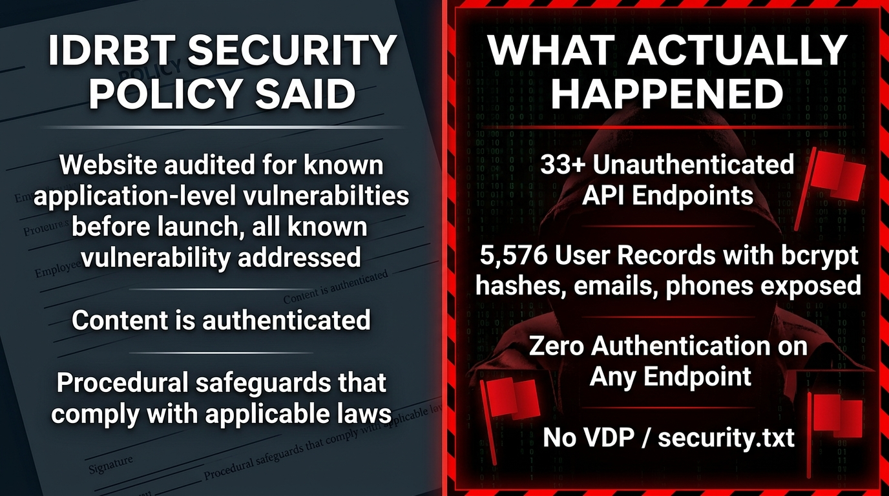

RBI created .bank.in as a trust anchor — a domain suffix that tells citizens, "this website is genuinely your bank." But the portal that issues these banking domains was built without a public tender, without a published security baseline, and without any vulnerability disclosure program. And for over a year, it leaked every credential it held.
The IDRBT Domain Registration Portal (registrar.idrbt.ac.in) — the exclusive registrar for India’s .bank.in namespace — exposed its entire REST API via 33+ unauthenticated endpoints. Anyone with curl could retrieve the bcrypt password hashes, mobile numbers, email addresses, login IPs, and device fingerprints of all 5,576 bank employees trusted with managing India’s banking domains. The very system meant to secure banking was itself the weakest link.
The portal was built by IKCON Technologies in a single-source award — no tender, no RFP, no competitive process — in direct violation of IDRBT’s own procurement handbook. IKCON held 22 employee accounts including 3 with global Super Admin access. No security researcher reviewed this system before it went live. No independent auditor tested it. The RBI circular made adoption mandatory — but made security optional.
Think of .bank.in as a special padlock RBI put on every bank website so you know it's real. This investigation found that the padlock maker's own system was leaking all the keys — and the report explains how, why it matters, and what's still broken.
IDRBT's published Privacy & Security Policy makes specific claims about security auditing, authentication, and data protection for the Domain Registration Portal. Our investigation found every one of these claims to be false.

The Security Policy claims: "The website was audited for known application-level vulnerabilities before the launch, and all the known vulnerability was addressed." Our investigation found 33+ unauthenticated API endpoints that exposed the entire user database, billing records, system configuration, and DSC proxy — a comprehensive failure that no competent security audit could have missed. The portal also had no vulnerability disclosure program (security.txt), making it impossible for researchers to report issues through official channels.
The policy states: "Content is authenticated and is provided for general information." Accessing every discovered endpoint required zero authentication — no login, no API key, no session cookie, no token. Anyone with curl could download the entire user database. The only thing protecting India's banking domain registry was security through obscurity.
The policy pledges: "We protect your personal information by maintaining physical, electronic, and procedural safeguards that comply with applicable laws." Exposing bcrypt password hashes, phone numbers, and device fingerprints of 5,576 bank employees without authentication violates every principle of data protection under the Digital Personal Data Protection Act, 2023, and RBI's own cybersecurity framework (RBI/2023-24/90).
| Dataset | Records |
|---|---|
| Registered .bank.in domains | 1,497 |
| Domains with active NS | 1,402 |
| Domains without NS (unpublished to NIXI) | 95 |
| Billing records (anonymized) | 1,535 |
| Certificate Transparency log entries | 3,797 |
| User records (original leak — contains PII/hashes — not published) | 5,461 |
| Orphan Super Admin records (contains PII/hashes — not published) | 1,072 |
Data feeds into the bank-in-domains daily audit (CT logs, Wayback Machine, urlscan.io at 02:30 UTC).
| Event | Date |
|---|---|
| Discovery | Jun 8 05:07 UTC |
| Reported to CERT-In | Jun 8 05:30 UTC |
| Extended enumeration | Jun 8 07:30 UTC |
| CERT-In acknowledges | Jun 8 |
| IDRBT deploys fix | Jun 25 |
| CERT-In confirms fixed | Jun 26 |
It took ~18 days for a trivial auth-gate fix.
A consumer collective that tracks the digital payments industry in India, producing awareness resources, technical analysis, open data, and policy inputs toward a fair cashless society.